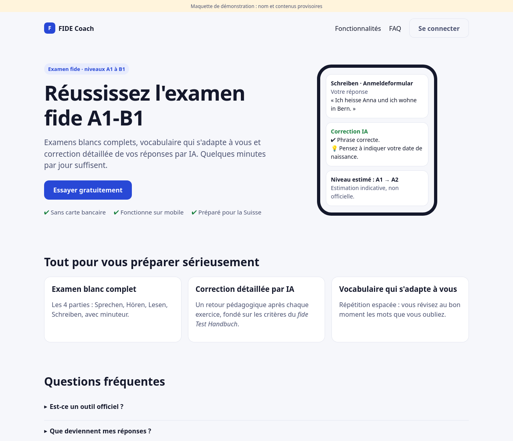
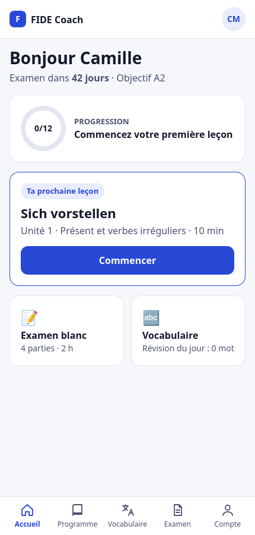
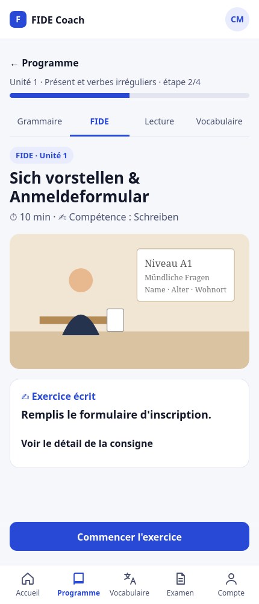
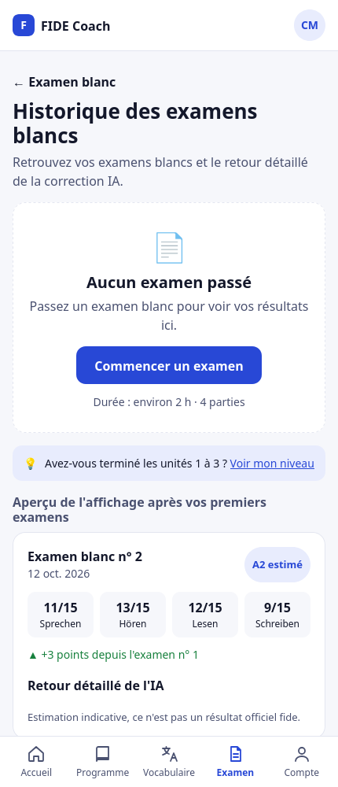
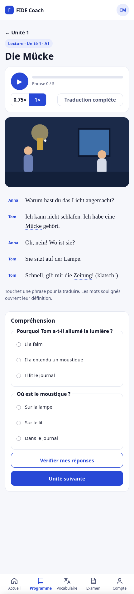
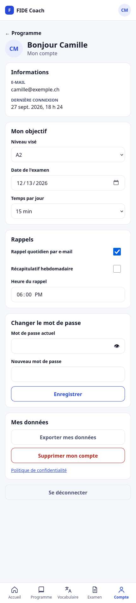

Avant / après : DeutschSommer → FIDE Coach
À gauche, les captures actuelles. À droite, la vue corrigée selon avant-après.md. Les maquettes « après » sont cliquables et fonctionnent comme une démo (lecteur audio, traduction, quiz, bascule du mot de passe…).
1. Page publique et connexion (desktop)


2. Accueil (mobile)


3. Leçon FIDE, unité 1 (mobile)


4. Historique des examens (mobile)


5. Texte de lecture « Die Mücke » (mobile)


6. Mon compte (mobile)

